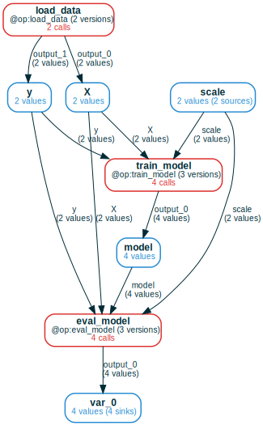

Changing @ops and managing versions

It should be easy to change your code and have the storage respond in a correct
way (e.g., recompute a call only when the logic behind it has changed).
mandala provides the following mechanisms to do that:
- automatic per-call dependency tracking: every
@opcall records the functions it called along the way. This allows thestorageto automatically know, given some inputs, whether a past call for these inputs can be reused given the current state of the code. This is a very fine-grained notion of reuse. - marking changes as breaking vs non-breaking: when a change to an
@opor its dependencies is detected, you can choose to mark it as breaking the calls that depend on it or not. However, breaking changes are generally more fool-proof; see caveats of non-breaking changes. - content-based versioning: the current state of the codebase uniquely
determines the version each
@opis in. There are no arbitrary names attached to versions. The versions for each@opcan be inspected in agit-like data structure.
Enabling and configuring versioning
Passing a value to the deps_path parameter of the Storage class enables
dependency tracking and versioning. This means that any time a memoized function
actually executes (instead of reusing a past call's results), it keeps track
of the functions and global variables it accesses along the way.
Usually, the functions we want to track are limited to user-defined ones (you typically don't want to track changes in installed libraries!):
- Setting
deps_pathto"__main__"will only look for dependenciesfdefined in the current interactive session or process (as determined byf.__module__). - Setting it to a folder will only look for dependencies defined in this folder.
# for Google Colab
try:
import google.colab
!pip install git+https://github.com/amakelov/mandala
except:
pass
The @track decorator
The most efficient and reliable implementation of dependency tracking currently
requires you to explicitly put @track on non-memoized functions and classes
you want to track. This limitation may be lifted in the future, but at the cost
of more magic (i.e., automatically applying the decorator to functions in the
current local scope that originate in given paths).
The alternative (experimental) decorator implementation is based on
sys.settrace. Limitations are described in this blog
post)
Examining the captured versions
Let's run a small ML pipeline, where we optionally apply scaling to the data,
introducing a non-@op dependency for some of the calls:
from sklearn.datasets import load_digits
from sklearn.linear_model import LogisticRegression
from sklearn.preprocessing import StandardScaler
N_CLASS = 10
@track # to track a non-memoized function as a dependency
def scale_data(X):
return StandardScaler(with_mean=True, with_std=False).fit_transform(X)
@op
def load_data():
X, y = load_digits(n_class=N_CLASS, return_X_y=True)
return X, y
@op
def train_model(X, y, scale=False):
if scale:
X = scale_data(X)
return LogisticRegression(max_iter=1000, solver='liblinear').fit(X, y)
@op
def eval_model(model, X, y, scale=False):
if scale:
X = scale_data(X)
return model.score(X, y)
with storage:
X, y = load_data()
for scale in [False, True]:
model = train_model(X, y, scale=scale)
acc = eval_model(model, X, y, scale=scale)
Now train_model and eval_model will each have two versions - one that
depends on scale_data and one that doesn't. You can confirm this by calling
e.g. storage.versions(train_model):
╭─────────────────────────────────────────────────────────────────────────────────────────────────────────────────╮ │ ### Dependencies for version of function train_model from module __main__ │ │ ### content_version_id=db93a1e9c60fb37868575845a7afe47d │ │ ### semantic_version_id=2acaa8919ddd4b5d8846f1f2d15bc971 │ │ │ │ ################################################################################ │ │ ### IN MODULE "__main__" │ │ ################################################################################ │ │ │ │ @op │ │ def train_model(X, y, scale=False): │ │ if scale: │ │ X = scale_data(X) │ │ return LogisticRegression(max_iter=1000, solver='liblinear').fit(X, y) │ │ │ ╰─────────────────────────────────────────────────────────────────────────────────────────────────────────────────╯ ╭─────────────────────────────────────────────────────────────────────────────────────────────────────────────────╮ │ ### Dependencies for version of function train_model from module __main__ │ │ ### content_version_id=2717c55fbbbb60442535a8dea0c81f67 │ │ ### semantic_version_id=4674057d19bbf217687dd9dabe01df36 │ │ │ │ ################################################################################ │ │ ### IN MODULE "__main__" │ │ ################################################################################ │ │ │ │ @track # to track a non-memoized function as a dependency │ │ def scale_data(X): │ │ return StandardScaler(with_mean=True, with_std=False).fit_transform(X) │ │ │ │ @op │ │ def train_model(X, y, scale=False): │ │ if scale: │ │ X = scale_data(X) │ │ return LogisticRegression(max_iter=1000, solver='liblinear').fit(X, y) │ │ │ ╰─────────────────────────────────────────────────────────────────────────────────────────────────────────────────╯
Making changes and sorting them into breaking and non-breaking
Now suppose we make some changes and re-run:
- we change the value of the global variable
N_CLASS; - we change the code of
scale_datain a semantically meaningful (i.e., breaking) way - we change the code of
eval_modelin a "cosmetic" way that can be considered non-breaking.
When entering the storage block, the storage will detect the changes in
the tracked components, and for each change will present you with the functions
affected:
N_CLASSis a dependency forload_data;scale_datais a dependency for the calls totrain_modelandeval_modelwhich hadscale=True;eval_modelis a dependency for itself.
from mandala.utils import mock_input
from unittest.mock import patch
N_CLASS = 5
@track
def scale_data(X):
return StandardScaler(with_mean=True, with_std=True).fit_transform(X)
@op
def eval_model(model, X, y, scale=False):
if scale:
X = scale_data(X)
return round(model.score(X, y), 2)
answers = ['y', 'n', 'y']
with patch('builtins.input', mock_input(answers)):
with storage:
X, y = load_data()
for scale in [False, True]:
model = train_model(X, y, scale=scale)
acc = eval_model(model, X, y, scale=scale)
CHANGE DETECTED in N_CLASS from module __main__
Dependent components:
Version of "load_data" from module "__main__" (content: 426c4c8c56d7c0d6374095c7d4a4974f, semantic: 7d0732b9bfb31e5e2211e0122651a624)
╭───────────────────────────────────────────────────── Diff ──────────────────────────────────────────────────────╮ │ 1 -10 │ │ 2 +5 │ ╰─────────────────────────────────────────────────────────────────────────────────────────────────────────────────╯
Does this change require recomputation of dependent calls?
WARNING: if the change created new dependencies and you choose 'no', you should add them by hand or risk missing changes in them.
Answer: [y]es/[n]o/[a]bort
You answered: "y"
CHANGE DETECTED in eval_model from module __main__
Dependent components:
Version of "eval_model" from module "__main__" (content: 955b2a683de8dacf624047c0e020140a, semantic: c847d6dc3f23c176e6c8bf9e7006576a)
Version of "eval_model" from module "__main__" (content: 5bdcd6ffc4888990d8922aa85795198d, semantic: 4e1d702e9797ebba156831294de46425)
╭───────────────────────────────────────────────────── Diff ──────────────────────────────────────────────────────╮ │ 1 if scale: │ │ 2 X = scale_data(X) │ │ 3 - return model.score(X, y) │ │ 4 + return round(model.score(X, y), 2) │ ╰─────────────────────────────────────────────────────────────────────────────────────────────────────────────────╯
Does this change require recomputation of dependent calls?
WARNING: if the change created new dependencies and you choose 'no', you should add them by hand or risk missing changes in them.
Answer: [y]es/[n]o/[a]bort
You answered: "n"
CHANGE DETECTED in scale_data from module __main__
Dependent components:
Version of "train_model" from module "__main__" (content: 2717c55fbbbb60442535a8dea0c81f67, semantic: 4674057d19bbf217687dd9dabe01df36)
Version of "eval_model" from module "__main__" (content: 5bdcd6ffc4888990d8922aa85795198d, semantic: 4e1d702e9797ebba156831294de46425)
╭───────────────────────────────────────────────────── Diff ──────────────────────────────────────────────────────╮ │ 1 -@track # to track a non-memoized function as a dependency │ │ 2 +@track │ │ 3 def scale_data(X): │ │ 4 - return StandardScaler(with_mean=True, with_std=False).fit_transform(X) │ │ 5 + return StandardScaler(with_mean=True, with_std=True).fit_transform(X) │ ╰─────────────────────────────────────────────────────────────────────────────────────────────────────────────────╯
Does this change require recomputation of dependent calls?
WARNING: if the change created new dependencies and you choose 'no', you should add them by hand or risk missing changes in them.
Answer: [y]es/[n]o/[a]bort
You answered: "y"
When a change is detected, the UI:
- shows the diffs in each function,
- gives you a list of which
@ops' versions are affected by each change - lets you choose if the change is breaking or non-breaking
We can check what happened by constructing a computation frame:

We see that load_data has two versions in use, whereas train_model and
eval_model both have three. Which ones? Again, call versions to find out.
For example, with eval_model, we have 4 different content versions, that
overall span 3 semantically different versions:
╭─────────────────────────────────────────────────────────────────────────────────────────────────────────────────╮ │ ### Dependencies for version of function eval_model from module __main__ │ │ ### content_version_id=955b2a683de8dacf624047c0e020140a │ │ ### semantic_version_id=c847d6dc3f23c176e6c8bf9e7006576a │ │ │ │ ################################################################################ │ │ ### IN MODULE "__main__" │ │ ################################################################################ │ │ │ │ @op │ │ def eval_model(model, X, y, scale=False): │ │ if scale: │ │ X = scale_data(X) │ │ return model.score(X, y) │ │ │ ╰─────────────────────────────────────────────────────────────────────────────────────────────────────────────────╯ ╭─────────────────────────────────────────────────────────────────────────────────────────────────────────────────╮ │ ### Dependencies for version of function eval_model from module __main__ │ │ ### content_version_id=5bdcd6ffc4888990d8922aa85795198d │ │ ### semantic_version_id=4e1d702e9797ebba156831294de46425 │ │ │ │ ################################################################################ │ │ ### IN MODULE "__main__" │ │ ################################################################################ │ │ │ │ @op │ │ def eval_model(model, X, y, scale=False): │ │ if scale: │ │ X = scale_data(X) │ │ return model.score(X, y) │ │ │ │ @track # to track a non-memoized function as a dependency │ │ def scale_data(X): │ │ return StandardScaler(with_mean=True, with_std=False).fit_transform(X) │ │ │ ╰─────────────────────────────────────────────────────────────────────────────────────────────────────────────────╯ ╭─────────────────────────────────────────────────────────────────────────────────────────────────────────────────╮ │ ### Dependencies for version of function eval_model from module __main__ │ │ ### content_version_id=b50e3e2529b811e226d2bb39a572a5e4 │ │ ### semantic_version_id=c847d6dc3f23c176e6c8bf9e7006576a │ │ │ │ ################################################################################ │ │ ### IN MODULE "__main__" │ │ ################################################################################ │ │ │ │ @op │ │ def eval_model(model, X, y, scale=False): │ │ if scale: │ │ X = scale_data(X) │ │ return model.score(X, y) │ │ │ ╰─────────────────────────────────────────────────────────────────────────────────────────────────────────────────╯ ╭─────────────────────────────────────────────────────────────────────────────────────────────────────────────────╮ │ ### Dependencies for version of function eval_model from module __main__ │ │ ### content_version_id=136129b20d9a3a3795e88ba8cf89b115 │ │ ### semantic_version_id=f2573de2a6c25b390fc86d665ea85687 │ │ │ │ ################################################################################ │ │ ### IN MODULE "__main__" │ │ ################################################################################ │ │ │ │ @op │ │ def eval_model(model, X, y, scale=False): │ │ if scale: │ │ X = scale_data(X) │ │ return model.score(X, y) │ │ │ │ @track │ │ def scale_data(X): │ │ return StandardScaler(with_mean=True, with_std=True).fit_transform(X) │ │ │ ╰─────────────────────────────────────────────────────────────────────────────────────────────────────────────────╯
Additional notes
So what really is a version of an @op?
A version for an @op is a collection of
- (hashes of) the source code of functions and methods
- (hashes of) values of global variables
at the time when a call to this @op was executed. Even if you don't change
anything in the code, a single function can have multiple versions if it invokes
different dependencies for different calls.
Going back in time
Since the versioning system is content-based, simply restoring an old state of the code makes the storage automatically recognize which "world" it's in, and which calls are memoized in this world.
Caveats of marking changes as non-breaking
The main motivation for allowing non-breaking changes is to maintain the storage when doing routine code improvements (refactoring, comments, logging).
However, non-semantic changes should be applied with care. Apart from being prone to errors (you wrongly conclude that a change has no effect on semantics when it does), they can also introduce invisible dependencies: suppose you factor a function out of some dependency and mark the change non-semantic. Then the newly extracted function may in reality be a dependency of the existing calls, but this goes unnoticed by the system. Consequently, changes in this dependency may go unnoticed by the versioning algorithm.